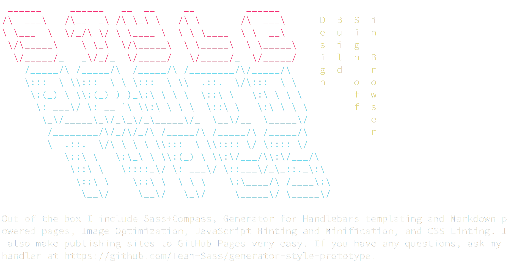

Style Prototyping
Who Am I?
- Sam Richard
- Sr. Front End Developer, NBCUniversal
- Snugug on Twitter, GitHub, The Internet
- Co-Organizer of Team Sass, SassConf
First, A Quiz

The Answer Is…
The Only Web Design Tool
These are Graphic Design Tools
This is a Farming Tool
The Web and Print are different mediums
We need to treat them differently
The Dao of Web Design
John Allsopp, April 07, 2000
Ritual
Well established hierarchies are not easily uprooted;
Tao Te Ching; 38 Ritual
Closely held beliefs are not easily released;
So ritual enthralls generation after generation.
Before the web, there was print. Hundreds of years of print.
Before there was print, there was writing. Thousands of years of writing
It was only natural than that the web borrowed heavily from print
When a new medium borrows from an existing one, some of what it borrows makes sense, but much of the borrowing is thoughtless, "ritual", and often constrains the new medium. Over time, the new medium develops its own conventions, throwing off existing conventions that don't make sense.
This happened with the transition from radio to television
Often referred to as "radio with pictures", early television followed the format of popular radio, even at times narrating scenes that the audience could see as if they could not
It happened with the introduction of music videos as well
Early music videos were mostly the band miming themselves playing a song
In both cases, the thoughtless rituals of their parent mediums were cast off while the ones that made sense to new medium's conventions flourished.
Television evolved genres and formats suited for visual story telling
Artists found that they could visually express themselves and their music in ways other than a mimed concert
Although the web medium sprang from print, print's conventions have for too long overshadowed the realities of the web
The web has been treated as if it were made of paper
It is time for the web, like other new mediums before it, to cast off the constraining rituals of the medium from which it emerged
Control
The sage… accepts the ebb and flow of things,
Tao Te Ching; 2 Abstraction
Nurtures them, but does not own them…
One of the core understandings of print is that
What You See Is What You Get
The designer has absolute pixel-perfect control over the design
There is a fixed content size, fixed display size, fixed viewing mode
Guess what. The web’s not a laser printer.
Karen McGrane
What if print's control is really a limitation?
You can think - we can fix the size of the text - or you can think - the size of the text is unalterable
You can think - the dimensions of a page can be controlled - or - the dimensions of a page can't be altered
In Print's Limitation We Find The Web's Strength:
Flexibility
The Way
The Way is shaped by use,
Tao Te Ching; 32 Shapes
But then the shape is lost.
Do not hold fast to shapes
But let sensation flow into the world
As a river courses down to the sea.
Form should follow function
Start with what your pages do, not what they looks like
Regardless of how they got there, users are there for your function, not your form

Users come to your site for the content, so you should design content first.
Your content and your site needs to be predictable in order to be useful.
Your site needs to be fast and reliable in order to be usable.
You need a style that will reflect your brand and can be carried from your content up
Only after all other needs have been met should you focus on visual flair
Visual flair should not negatively affect any of the other needs
Let your design flow from your content
Let your user flow around your site
Tend to any rocks in your stream
Be fluid as water
The Page Metaphor Is Killing The Web
We need to build Systems of Style
We need to build them In Browser
With the tools of web design
Let's employ modern development tools to help


Style Prototypes are a tool for Designing Style Systems In Browser from the Content Out
Make sure Ruby, Node.js, and Git are installed and available on the command line
npm install -g yo grunt-cli bower generator-style-prototypegem install bundleryo style-prototype
grunt serverConnect to the WiFi:
Wifi Network
WiFi Password
Go to the following:
http://192.168.1.0:8000
Design In Your Browser
Design Workflow
There are a variety of roles that play a role in the design and development of a site:
- Visual Design - Designer(s) responsible for look and feel
- Production Design - Designer(s) responsible for in-browser design decisions. Ideally, visual design and production design is the same
- Front End Development - HTML/CSS/JS development expert(s)
- Back End Development - Server side development expert(s)
![Steps of Design/Development Cycle. Project Planning: Product Owner, Project Manager, Visual Design, Production Design, Front End Development, Back End Development, and Quality Assurance agree upon the scope of a story. In-Browser Design: Visual Design, Production Design, Front and Back End Development agree upon the component's HTML in the Style Prototype. In the implementation, the Front and Back End Developers create develop the implementation output while the visual and produciton designers create the design. Feature QA happens in the implementation, while cross-browser QA happens in the style prototype. Once finished, the designers and developers integrate the style prototype into the integration, where regression QA happens.](images/Design-Dev-Cycle.svg)
Elements
Elements are the building blocks of any site; each core tag, styled
Following the North standards, we don't want to have our core styling bleed out from the tags, so we can constrain it.
We are then able to call upon the base styling via the extendable class
Components
Components are the building blocks of a site.
Often called block or modules as well, a component is a single, reusable set of HTML that forms a coherent piece of a site
A single component may have stying or experience variations, but what defines a component is the shared underlying HTML
Components need to be able to respond to whatever container they're placed in
We can accomplish this with a tiny, self contained JavaScript library called eq.js
eq.js allows for limited pseudo-element-query usage by restricting "element queries" to min-width only, only checking for changes on DOMContentLoaded and resize, and requiring the query information be stored in HTML
By constraining what can be queried (and how it can be defined), it becomes possible to use "element queries" fast and efficiently in any project and in under 3kb
<div class="component" data-eq-pts="small: 400, medium: 600, large: 900">
<h1>Hello World</h1>
</div>.container {
border: 2px solid red;
background-color: rgba(red, .25);
&[data-eq-state="small"] {
border-color: green;
background-color: rgba(green .25);
}
&[data-eq-state="medium"] {
border-color: orange;
background-color: rgba(orange, .25);
}
&[data-eq-state="large"] {
border-color: blue;
background-color: rgba(blue, .25);
}
}Layouts
Layouts in Style Prototypes are very similar to grey box UX wireframes
Each layout is simply a set of regions that can be visualized using the .prototype--layout-block class
To make a responsive layout, simply add media queries!
Prototypes
Often, a client will ant to see what components will look like when placed into layouts
Style Prototypes can be expanded to include prototype sections to show components and layouts working together!
Thank You
Slides available at
http://snugug.github.io/Style-Prototyping